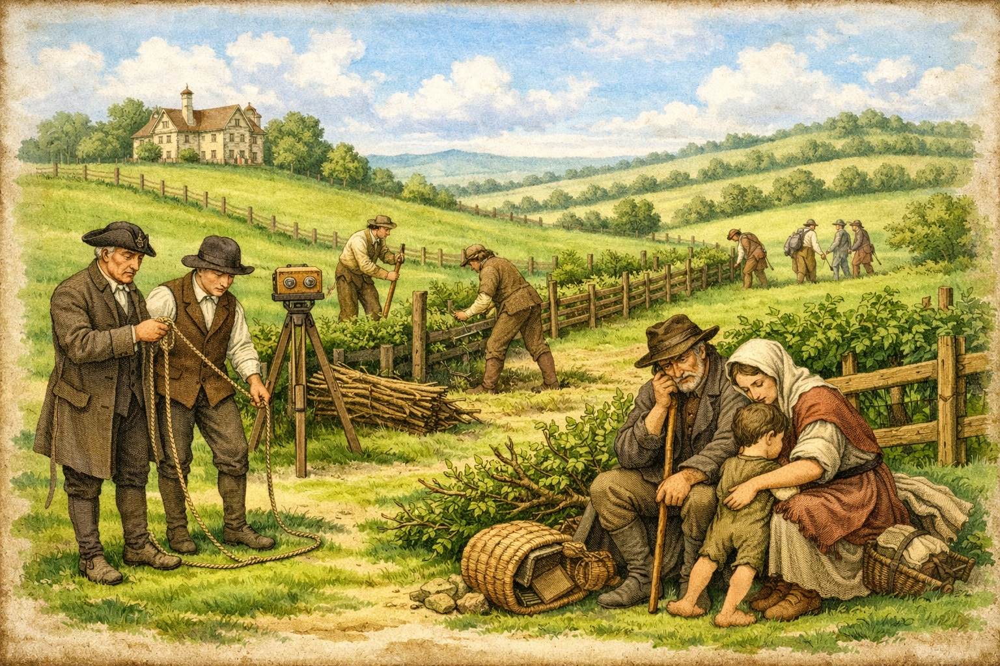

The Enclosure Movement — The Holts and the Common Land

For centuries before the Tudor period, England’s common land — meadow, pasture and waste — was held by custom rather than by deed. Every family in a township held rights to use it: to graze animals, gather fuel, cut rushes and glean what the seasons offered. These were ancient entitlements, understood by lord and tenant alike, and they formed the economic foundation of rural life.
From the mid-sixteenth century this system began to change across England. The process became known as enclosure: the taking of common or waste land and bringing it into private, consolidated ownership. In the early period enclosures were generally carried out by informal manorial authority rather than by statute. It was not until the seventeenth century that the practice of obtaining Parliamentary authorisation became established, and not until after 1750 that Parliamentary enclosure became the norm. Between 1604 and 1914, over 5,200 enclosure Bills were enacted by Parliament, relating to more than a fifth of the total area of England, amounting to some 6.8 million acres.
In Lancashire, as elsewhere, the men with the legal standing to act were the gentry who held manorial authority over the waste. The Holts of Rochdale were among those families. The evidence survives in a chain of primary sources — inquisitions post mortem, the 1626 Survey of the Manor of Rochdale published by the Chetham Society, and the Victoria County History of Lancashire — that together record a documented pattern of enclosure and land consolidation across several generations of the family.
Enclosure did not affect all Holts in the same way. The principal gentry line — the Holts of Stubley and Castleton — held manorial authority and were active enclosers, consolidating waste into private estates across the sixteenth century. But the parish of Rochdale contained many other Holt families: copyholders in Spotland, Butterworth and Whitworth who held by customary tenure; smaller tenants in Castleton and Hundersfield whose rights over the moor were practical necessities; and freeholders who found their boundaries and obligations shifting as the waste around them was taken in. Enclosure shaped the landscape in which all of them lived. For the gentry Holts it meant wealth and consolidation; for their humbler namesakes it often meant the loss of resources that had no legal replacement.
- 1235 Statute of Merton gives legal support to lords wishing to enclose waste land, provided sufficient common remains for their free tenants.
- 14th–16th c. Landowners begin converting common arable to sheep pasture across England; villages depopulated; peasant revolts follow, including Kett’s Rebellion (1549) in which enclosure is a central grievance.
- 1533 Tillage Act restricts flocks to 2,400 sheep in response to popular opposition to conversion of arable to pasture.
- 17th c. Practice develops of obtaining authorisation for enclosure by Act of Parliament rather than manorial agreement alone.
- 1604–1914 Over 5,200 Parliamentary enclosure Bills enacted, enclosing some 6.8 million acres — more than a fifth of England’s total land area.
- Post 1750 Parliamentary enclosure becomes the norm; the pace accelerates sharply through the Agricultural Revolution.
- 1801 General Enclosure Act sanctions large-scale land reform, standardising the Parliamentary process.
Common Rights: What Was at Stake
To understand why enclosure mattered in the Rochdale townships, it is necessary to understand what common rights meant in practice for all social ranks, not only the gentry. In upland Lancashire, common waste served functions that had no equivalent in the enclosed farming of the south. The moors and wastes around Castleton, Spotland and Hundersfield were not idle ground. They were working resources, governed by customary entitlements enforced through the manor court.
Rights of common pasture allowed tenants of all ranks to graze cattle, sheep and pigs on the moor. For a small copyhold tenant with two or three acres of enclosed land, the ability to put animals onto the waste in summer was often the difference between a viable holding and an unworkable one. Rights of turbary permitted the cutting of peat, the primary fuel for households that could not easily obtain coal. Rights of estovers covered the gathering of bracken, wood and other materials for building and bedding. Rights of piscary applied to common waters. None of these rights required any formal deed or payment: they attached to the tenancy itself, and the manor court existed in part to adjudicate disputes over their exercise.
Copyholders — tenants who held their land by copy of the court roll rather than by freehold deed — were especially exposed when enclosure occurred. Their customary tenure was legally enforceable, but only for the holder's own life. The heir held by custom, not right, and in exchange for a fine payable to the lord. When a lord chose to convert copyhold into leasehold, or simply to absorb the common land that made a copyhold viable, a copyholder had limited recourse. The 1626 Survey of the Manor of Rochdale identifies numerous Holt copyholders across Castleton, Spotland, Butterworth and Whitworth, all of whom were holding land on precisely these terms in the aftermath of the principal enclosures of the preceding sixty years.
The Holts and the Common Land of Rochdale
The Holts of Stubley and Castleton were the principal resident gentry family in the parish of Rochdale across more than three centuries. Their lands spread through the townships of Hundersfield, Spotland, Castleton and Butterworth, and their manorial authority gave them direct power over the common wastes that lay between those townships. The documentary record captures their role in the enclosure of those wastes across several named generations. But the wider Holt presence in the parish — copyholders, freeholders and minor tenants identified across the same records — shows that the enclosure of Rochdale's common land was not simply something done by one prominent Holt. It transformed the conditions in which all Holt families in the parish held and worked their land
d. 1494
By the late fifteenth century the Holts were already substantial holders in the Rochdale area. Thomas Holt held by knight’s service of the king as Duke of Lancaster: five messuages and sixty acres called Little Wardle; fifteen messuages and sixty acres in Hundersfield; and further lands in Spotland and Butterworth. He left a son and heir Robert, then aged thirteen, whose wardship was granted to James Stanley, clerk.
The scale of Thomas's holdings across four townships placed the Holt family at the centre of a landscape that still included substantial common waste. The wastes of Hundersfield, the moors of Castleton, and the commons of Spotland and Butterworth were all accessible from the lands he held. At this date they remained open, unenclosed, and customarily available to the tenants of the townships. The changes that would begin in the next generation had not yet happened.
Source: Victoria County History of Lancashire, Vol. 5, Townships of Wuerdle and Wardle.
d. December 1554
Robert extended the family’s holdings significantly. In 1542 he purchased the Castleton estate — part of the former lands of Whalley Abbey, confiscated at the Dissolution — from Henry VIII. By the time of his death he held the manors of Hundersfield, Spotland and Castleton, with eighty messuages, three water mills, four fulling mills, and land in Hundersfield, Spotland, Bury, Castleton, Butterworth, Middleton and Tottington.
The Dissolution purchase was itself a form of land consolidation that prepared the ground for enclosure. By acquiring the Castleton estate from the Crown, Robert Holt brought under single manorial ownership a block of former monastic land that had previously been administered separately. The Castleton estate included Castleton Moor — the common waste that would be the principal site of enclosure in the following generation. Robert's acquisition did not immediately change how the moor was used; tenants continued to exercise common rights across it. But the conditions for change were now in place. The lord of the manor and the owner of the surrounding estate were the same person.
At this date the surname Holt was already distributed across several other Rochdale townships. The court rolls of the manor record John Holt of Spotland, Robert Holt of Castleton cottage and other Holt names in Butterworth and Whitworth, all holding by customary tenure or small freehold. These families were not connected to the Stubley line by any documented relationship. They were part of the broader Holt population of the parish, and they would feel the consequences of the enclosures carried out by the gentry branch from the 1560s onward.
Source: Victoria County History of Lancashire, Vol. 5; Holts of Stubley, compiled from deeds and county records.
active c. 1556–1592
Charles Holt carried out the most directly documented acts of enclosure. In 1560 he enclosed two-thirds of the waste land of Castleton common. By his death in 1592 he held ninety houses in Rochdale alone and also owned the water corn mill in Castleton. The 1626 Survey of the Manor of Rochdale, compiled for Sir Robert Heath, the king’s attorney general, records in the jury’s own presentment that two further portions of Castleton common were enclosed by Charles Holt and others approximately twenty-nine years before the Survey — placing a second act of enclosure at around 1597.
The jury's presentment in the 1626 Survey is the most direct primary evidence for what happened to Rochdale's common land. The jury stated that within the thirty years preceding the Survey, certain wastes, commons and heath ground within the parish had been enclosed, some wholly and some in part, and that the enclosures had since become copyhold lands. The jury further noted that these enclosures did not yield to His Majesty the rent that might have been expected. This was not simply a fiscal complaint. It recorded a structural transformation: land that had been open and customarily available had been taken into private tenure and was now managed through the manor court's copyhold system. The families who had grazed animals on Castleton Moor, cut peat there and gathered its seasonal resources had lost those rights, and had no legal recourse once the land was enrolled as copyhold.
The same Survey also shows Charles Holte of Balderstone, his wife Mary, and his son Samuel surrendering copyhold in April and May 1622 of parcels described as “improved out of Castleton Moor”: a close called “Rough Past.” of two acres, and a close called the “over Pasture” of two acres, now passing to other Rochdale families. These copyhold surrenders are the documentary trace of earlier enclosure: land formerly common waste, brought into cultivation, and passing through the manorial copyhold system.
These transactions also illustrate how enclosure created opportunities for a second tier of Holt families. Charles Holte of Balderstone was not the principal gentry line but a related branch, and by 1622 his family held copyhold in parcels that had been carved from the moor. Whether they had benefited from the original enclosure or had subsequently acquired the copyhold through normal manorial transactions is not clear from the Survey alone. What is clear is that the enclosed moor had been divided into holdings now circulating among Rochdale families of varying status, including multiple Holt households.
Source: Survey of the Manor of Rochdale, 1626, ed. Henry Fishwick, Chetham Society, 1913; Holts of Stubley.
The 1626 Survey: Holts Across the Township
The 1626 Survey is not only a record of what the gentry Holts held. It is a snapshot of the entire manor at a particular moment, and it shows Holt families at multiple levels of the landholding structure, all living with the consequences of the enclosures of the preceding sixty years.
At the head of the Survey stands John Holte Esquire, recorded as holding by knight's service four score messuages, three water mills, one fulling mill with two stocks, one thousand acres of land, three hundred acres of meadow, one thousand acres of pasture, and forty acres of wood and underwood across Hundersfield, Spotland and Butterworth. He further claimed a third part of the Manor of Rochdale as of His Majesty's Duchy of Lancaster. This was the largest single Holt holding in the Survey, and it represented a landholding built in part through the consolidation and enclosure of waste over the preceding generations.
But the same Survey records other Holt names in very different circumstances. In Hundersfield, the heirs of a deceased Holt tenant held a tenement in Whitworth by customary rent. In Spotland, John Holt held a customary tenement by copyhold. In Castleton, Robert Holt held a cottage or small holding by customary rent. In Butterworth, a tenement described simply as "Holt's" was listed among the copyhold lands. In Wardle and Wuerdle, a Holt appears among the customary tenants owing suit of court. Theophilus Holt held one of the water corn mills in Broadwood. These were not wealthy freeholders. They were customary tenants and small copyholders, holding land that in several cases adjoined the moors and wastes that had been enclosed in the preceding decades.
For these families, the enclosure of Castleton Moor and the other Rochdale wastes was not an act they had participated in. It was something that had happened around them, changing the boundaries of the land they held and removing the common resources that had supplemented their holdings. The Survey records them paying customary rents and performing suit of court: obligations that were the mechanism through which the lord of the manor maintained authority over the enclosed and copyhold landscape that enclosure had created.
Later Generations
d. 1673
The Hearth Tax of c.1664 records Robert Holt with fifteen hearths in Castleton — the largest house in the township — and a second Robert Holt with eleven hearths in Wuerdle and Wardle. These assessments reflect not simply residential comfort but the cumulative result of over a century of land consolidation. The Castleton estate that Robert Holt occupied had been built on the Dissolution purchase of 1542, extended through the enclosures of the 1560s and 1590s, and consolidated across the copyhold transactions of the early seventeenth century. The fifteen-hearth house at Castleton Hall stood, in a direct sense, on the ground of the former moor.
The Hearth Tax also recorded Holt households of much smaller scale across the parish: Robert Holt with three hearths in Spotland, John Holt with two hearths in Butterworth, Abraham Holt with one hearth in Todmorden and Walsden. These smaller households represent the wider distribution of the surname through the Rochdale townships. Their modest hearth counts indicate tenant or yeoman status rather than gentry landholding. They were living in the landscape that enclosure had reshaped, holding copyhold or small freehold land in parishes where the common waste had been substantially reduced across the preceding century.
At the outbreak of the Civil War, Robert of Castleton joined the king's forces under the influence of the Earl of Derby and served in North Wales. In 1645 he surrendered, took the National Covenant and Negative Oath, and compounded; his fine was £1,150. A pedigree of the family was recorded in 1664. He died in 1673, leaving a younger son James to succeed him.
Source: Victoria County History of Lancashire, Vol. 5; Hearth Tax returns for the Parish of Rochdale, c.1664.
d. 1712
James died in 1712 without male heirs. His four daughters became co-heirs: Frances, wife of James Winstanley; Elizabeth, wife of William Cavendish; Isabella, wife of Delaval Dutton and afterwards of Sir William Parsons; and Mary, wife of Samuel Chetham of Turton. Samuel Chetham purchased the portions of the other three sisters and so acquired the whole Castleton and Stubley estate. He improved Castleton Hall and died in 1744 without issue. The estate then passed to his brother Humphrey, and eventually back into the Holt family connection through the Winstanleys, before Clement Winstanley sold Castleton Hall in 1772, bringing the direct Holt connection with these lands to a close.
The dispersal of the Castleton and Stubley estate through female heirs in 1712 was the end of a process of consolidation that had begun with Thomas Holt's holdings in the late fifteenth century. The estate that passed out of Holt hands in 1712 and again in 1772 included the enclosed closes and former moorland that Charles Holt had brought into private ownership in the 1560s and 1590s. The copyhold lands, the former wastes improved into pasture and arable, and the manorial revenues that had grown from them all passed with the estate to the Chethams and then the Winstanleys. By 1772 the landscape of Castleton had been enclosed and privately held for over two hundred years.
The smaller Holt families of the parish — copyholders and yeoman tenants in Spotland, Butterworth, Whitworth and Hundersfield — continued after 1712 without reference to the fate of the gentry estate. Their connection to the enclosure movement was not through ownership but through tenancy, and they persist in the manorial and parish records of the eighteenth century as families working land in a parish whose common waste had long since been absorbed into private copyhold tenure.
Source: Victoria County History of Lancashire, Vol. 5.
The Landscape After Enclosure: A Contemporary Account
Celia Fiennes, writing about 1700, described the view from Blackstone Edge looking down into the Rochdale district as a fruitful valley, full of enclosures and cut hedges and trees. She was observing a landscape that had been transformed across the preceding century and a half. The hedged closes and divided fields she saw from the Edge were the physical outcome of the process documented in the manorial records: former waste and common land, enclosed, cultivated, bounded, and absorbed into private ownership. For a traveller arriving from the moors, the enclosed valley of Rochdale appeared prosperous and orderly. For the families who had held common rights across those same fields, the hedges and boundaries marked the permanent loss of a system of land use that had sustained them for generations.
The Victoria County History of Lancashire, drawing on the same evidence as the 1626 Survey, observed that about the time of the sale of the Byron estates in the early seventeenth century, many wastes in the parish of Rochdale appeared to have been enclosed. This was not an exceptional observation for one parish: it was part of a nationwide transformation. But in the Rochdale townships the Holts were at the centre of it — both as the gentry family whose enclosures the Survey jury recorded, and as the copyholders and tenants whose customary holdings were shaped by the same events.
- Victoria County History of Lancashire, Vol. 5: Townships of Wuerdle and Wardle; Parish of Rochdale (British History Online)
- The Survey of the Manor of Rochdale, 1626, edited by Henry Fishwick F.S.A., published by the Chetham Society, 1913 (Internet Archive)
- Holts of Stubley: family history compiled from deeds, county records, and the Family History Society of Cheshire Journal 8(3), 1979
- Hearth Tax returns for the Parish of Rochdale, c.1664, cited in the Victoria County History of Lancashire, Vol. 5